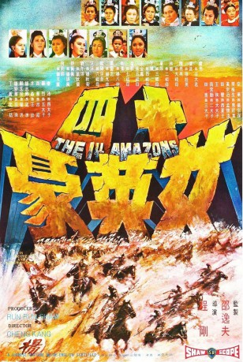
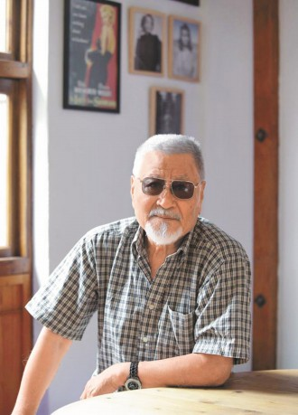
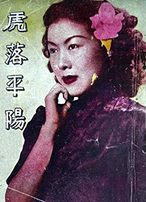
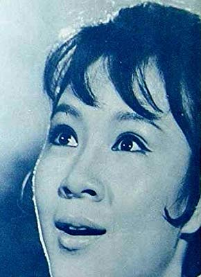

#8286 Die Rache der Gelben Tiger
Alternativ: The 14 Amazons (Englischer Titel)
 
 IMDB-Wertung: 6.7 / 10
IMDB-Wertung: 6.7 / 10  Metascore: 0
Metascore: 0 
Die Yang Familie diente dem Land seit Generationen und haben in vielen Schlachten ihr Leben für das Land gelassen. Bei einer neuen Schlacht werden fast alle männlichen Yang Kämpfer getötet. Nur zwei Offizieren gelingt die Flucht. Sie kehren zum Wohnort der Yang Familie zurück und berichten von dem Vorfall. Wang Ching, ein korrupter Offizieller, der sich mit der Barbaren, die für den Tod der Yangs verantwortlich sind, zusammen tun will, zieht den Zorn der weiblichen Yang Sippe auf sich. Die Grossmutter und die ganzen weiblichen Yang Frauen ziehen mit ihrer Streitmacht los, um Rache zu nehmen…
Jahr: 1972
Dauer: 117 Minuten
FSK: 18
Land: Hong-Kong Studio: Koch MediaTonspuren:
Untertitel: Deutsch,
Auflösung: 1080p (1920x816) Größe: 6287 MB
Genre: Drama, Abenteuer, Krieg, Geschichte
Regisseur: Kang Cheng, Shao-Yung Tung
Drehbuch: Yang Kao
Soundtrack: Fu-Ling Wang
Darsteller:
 Mei Sheng Fan als Chiao Ting Kuai, Yang's General
Mei Sheng Fan als Chiao Ting Kuai, Yang's General Feng Tien als King of Asia Hsia / Mongolia
Feng Tien als King of Asia Hsia / Mongolia-  Hsieh Wang als 1st Prince
 Paul Chun als 4th Prince
Paul Chun als 4th Prince Lieh Lo als 5th Prince
Lieh Lo als 5th Prince- Ivy Ling Po als Mu Kuei Ying
 Lisa Lu als She Tai-Chun, Great Grand-Mother
Lisa Lu als She Tai-Chun, Great Grand-Mother Bolo Yeung als Hsia Boxing Champion
Bolo Yeung als Hsia Boxing Champion- Hua Tsung als Yang Tsung Pao
- Chung-Hsin Huang als Meng Huai Yuan, Yang's General
- James Nam als 2nd Prince
- Ching Tien als 3rd Prince
- Yanyan Chen als Ken Chin Hua
- Ching Lin als Tsou Lan Ying
- Ping Ha als Tung Yueh Ngo
- Betty Ting Pei als Huang Chiung Nu
- Chin-Feng Wang als Ma Sai Ying
- Tina Chin-Fei als Tu Chin Ngo
- Ching Lee als Yang Pa Mei
- Karen Yeh als Yang Chiu Mei
-  Sha-Fei Ouyang als Chai Chun Chu
-  Ping Wang als Wang Chiu Chu
- Wu Chi Liu als Yang Chiu Lan
- Pei-Pei Shu als Yang Pai Feng
- Hua Yueh als Lu Chao, Pearl's Brother
- Miao Ching als Wang Ching
 Chih-Ching Yang als Kou Chin
Chih-Ching Yang als Kou Chin- Wen Chung Ku als Yang Hung
- Ai-Hua Yang als Pearl
- Chien Ting als Shen Ku
 Shen Chan als Xia Guard of rice depot shooting arrow signal
Shen Chan als Xia Guard of rice depot shooting arrow signal- Han Lo als
- Yun Tai Ho als
- Lily Ho als Yang Wen Xuang
- Hsing Chun Hsu als
- Chiu Chin Ku als
- Wei Lieh Lan als
- Hao Li als
- Han Ling als
- Shan Lu als
- Wei Lu als
- Pan Pan Yeung als Yang's Female Soldier (uncredited)
Datei: X:\FSK18-Eastern\Rache der Gelben Tiger, Die (1972, FSK18, 1920x816).mkv seit 20.02.2018
Festplatte: FSK18
 Es gibt insgesamt 102 Filme in der Gruppe 'FSK18-Eastern'
Es gibt insgesamt 102 Filme in der Gruppe 'FSK18-Eastern'